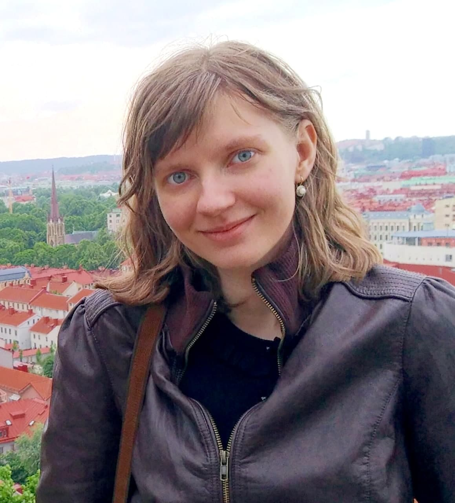

Ph.D. student at Paris Lodron Universität SalzburgM.Sc. in Computer Science, Paris Lodron Universität Salzburg, 2024. [Master's thesis]
B.Sc. in Computer Science and Information Technologies, Southern Federal University, 2018.
Email: anne.bolotina@gmail.com
I am a Ph.D student supervised by Prof. Christoph Kirsch, working on formal methods at the systems level, specifically on bounded symbolic execution. I am also interested in research in programming languages and functional programming. I was a research assistant at Czech Technical University in Prague in 2019–2022. I have worked on generic programming in Haskell and on the macro system of Racket.
Handling Recursion in Generic Programming Using Closed Type Families.
Anna Bolotina, Artem Pelenitsyn.
Talk at the Symposium on Trends in Functional Programming (TFP 2018).
Defining a Generic Zipper Using generics-sop.
Anna Bolotina.
Programming Languages and Compilers Seminar. Southern Federal University.
May 2017.
Differentiation and Generic Zippers in Haskell.
Anna Bolotina.
Programming Languages and Compilers Seminar. Southern Federal University.
November 2016.
Site written in Markdown | Page design by Ankit Sultana | Hosted by GitHub Pages